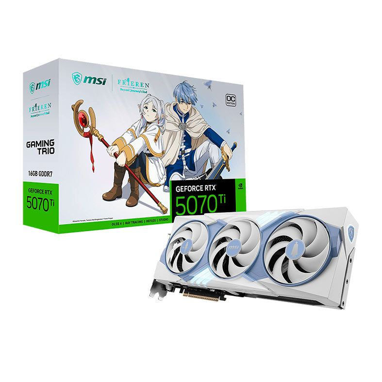
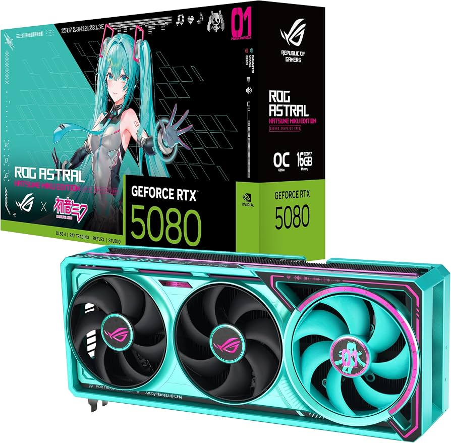
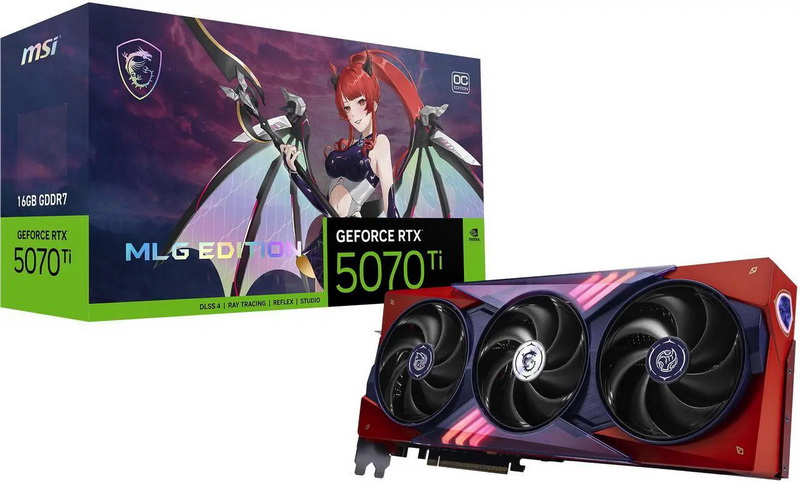
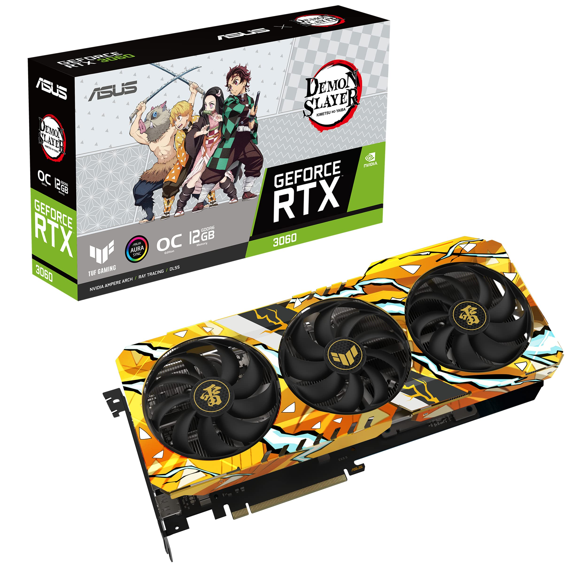

Catálogo de Placas de video
Bem-vindo à TechPoint! Aqui você encontra Placas de Video de edição especial pelo melhor Preço.

Frieren:Além do Fim da Jornada pinta um retrato delicado da despedida e da eternidade,convidando-nos a refletir sobre o verdadeiro significado da própria jornada.Agora,a MSI dá vida a essa emoção com uma placa gráfica exclusiva, criada com um design requintado e um desempenho formidável para criar uma nova lenda para os aventureiros de hoje. E quando a energia volta e as luzes se acendem, parece que a magia se agita novamente e sua história recomeça.

A ROG continua sua colaboração com a estrela pop virtual Hatsune Miku com um sistema de jogos completo centrado na estética de ficção científica da ROG e no esquema de cores azul-esverdeado e rosa característico de Miku.A coleção combina o estilo único de Hatsune Miku com o desempenho superior da ROG, qualidade premium e funcionalidade versátil para jogos competitivos ou tarefas do dia a dia.

Com a arquitetura NVIDIA Blackwell e DLSS 4,a placa oferece alto desempenho e ótima qualidade gráfica.Seu sistema de refrigeração TRI FROZR 4,com ventoinhas STORMFORCE e base de cobre niquelado,mantém a placa fria e silenciosa mesmo durante o uso intenso. O Dual BIOS permite escolher entre o modo GAMING, para mais desempenho,e o SILENCIOSO,para reduzir o ruído. Além disso,o MSI Center permite monitorar e ajustar a placa, enquanto o MSI Afterburner oferece opções de controle e overclock.

A placa de vídeo ASUS TUF Demon Slayer GeForce RTX 3060 V2 OC Edition é uma GPU de alto desempenho, desenvolvida para jogos e tarefas que exigem bastante processamento gráfico. Ela possui o chip NVIDIA GeForce RTX 3060, 12 GB de memória GDDR6 e conexões DisplayPort e HDMI, proporcionando uma experiência de jogo fluida e imersiva. Compatível com slots PCI, é uma ótima opção para quem deseja melhorar o desempenho gráfico do computador e aproveitar jogos com gráficos e efeitos visuais de alta qualidade.
| Produto | Marca | Preço | Quantidade |
|---|---|---|---|
| RTX 5070 TI FRIEREN | MSI | R$ 9.499,00 | 8 |
| RTX 5080 MIKU | ROG | R$ 23.100,00 | 25 |
| RTX 5070 TI MLG | MSI | R$ 8.700,99 | 15 |
| RTX 3060 Demon Slayer | ASUS | R$ 2490,90 | 20 |
Áudio de demonstração:
Vídeo de demonstração:
Vídeo de demonstração:
Email: contato@TechPoint.com
Telefone: (31) 99999-9999